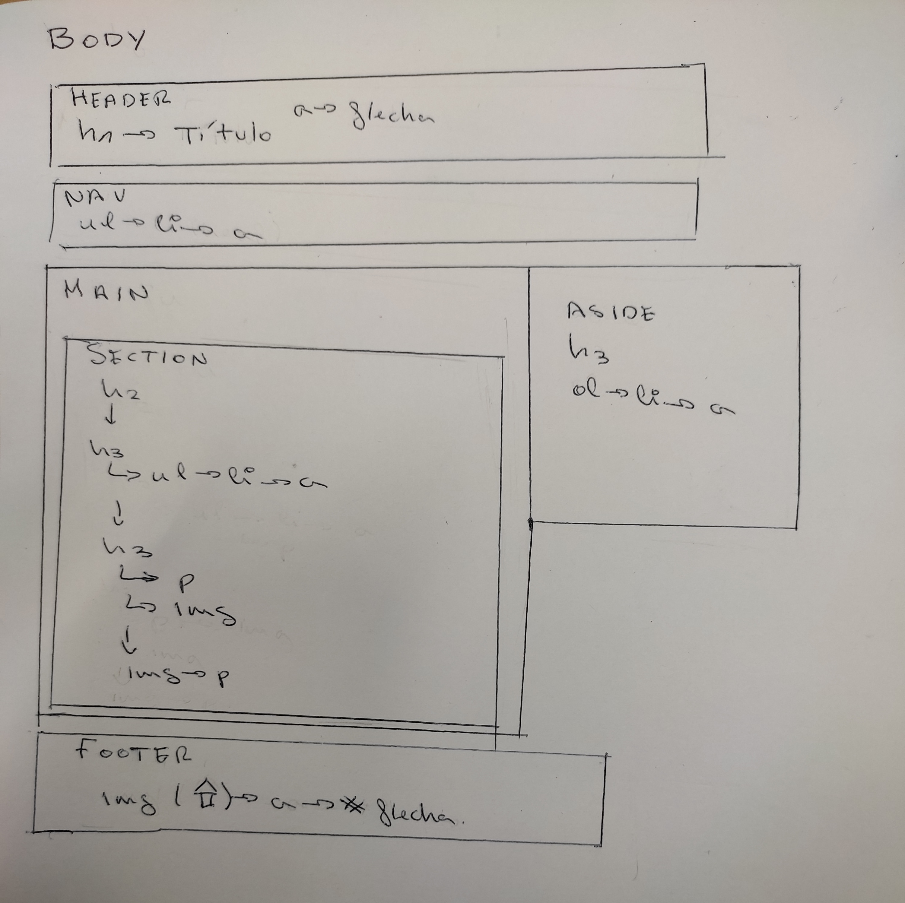

Mis gustos
Mis canciones favoritas
Mis libros favoritos
Los 7 maridos de Evelyn Hugo
En este libro, la protagonista, , entrevista a Evelyn, una actriz muy reconocida en los años 40 y 50 de Hollywood. También es conocida por haber tenido 7 matrimonios, pero todo el mundo se pregunta cual fue el amor de su vida. Durante este libro comentarán temas muy tabús y polémicos de la época, sorprendiendo sobre el giro de la vida amorosa de la actriz.
El pecador de oxford
sabelle cambió su nombre y renunció a su vida cuando descubrió que su marido no era solamente el profesor de Teología que le juró amor hasta el fin de los días, sino un asesino en serie a quien la prensa llamó «El pecador de Oxford».
Tres años más tarde, recibe un extraño paquete y, con él, regresan los fantasmas que creyó dejar atrás. Sabe que el regalo solo puede venir de una persona y que ahora su vida corre peligro. Para protegerla, un enigmático francotirador retirado se pegará a ella como si fuera su segunda piel. Entre los peligros que la acechan, Isabelle intentará hacerle un hueco a la pasión que alguna vez llenó su alma. Pero para ella todos son sospechosos y el deseo de poner fin a tanto sufrimiento primará sobre las razones que dicta su corazón.
¿Quiénes son los malos? ¿Quiénes son los buenos? Es imposible saberlo cuando tu vida pende de un hilo.
Este thriller te hará dudar quien está a favor o en contra dela protagonista, no conociendo la verdad hasta el final del libro.
Layout
El layout o estructura de un interfaz web es la manera de organizar o disponer los elementos visuales en la página. El diseño del layout determina la posición de cada uno de los elementos que componen el interfaz web (cabecera, menús, banners, contenido, etc.).
